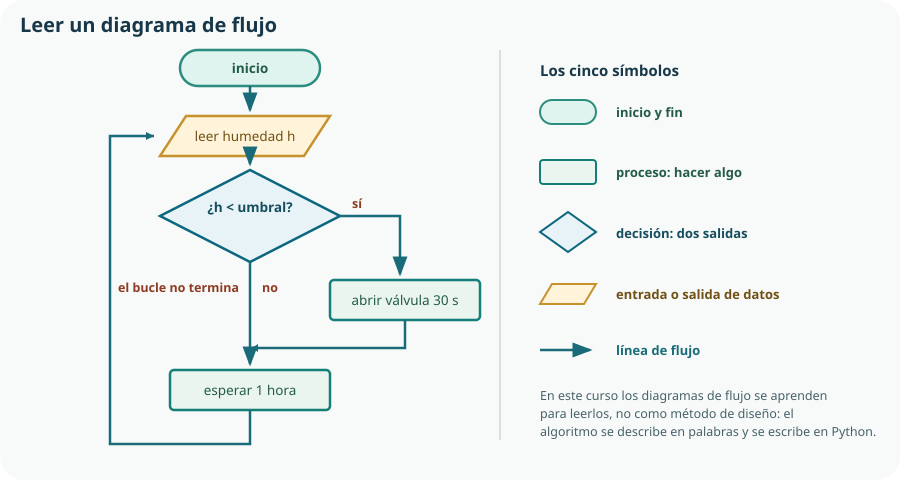

Empieza el Bloque E, y empieza de cero: no se supone ningún conocimiento previo de Python. Es también el bloque más importante del curso, porque es el único lugar de la materia donde se aprende a programar —en 2.º de Bachillerato el bloque informático cambia de objeto— y porque los bloques F y G lo aplican sin volver a explicarlo. Aquí no aprenderemos a programar «en general»: aprenderemos a programar sistemas técnicos, que es otra cosa.
- explicar qué distingue un lenguaje de programación textual y por qué el currículo lo exige;
- situar Python entre los lenguajes y justificar su elección para esta materia;
- describir las tres estructuras de la programación estructurada;
- reconocer las partes de un programa: instrucciones, sintaxis, sangrado y comentarios;
- trabajar en Jupyter Notebook con Google Colab entendiendo el estado de la sesión;
- pasar de un enunciado en palabras a un algoritmo descrito en lenguaje natural y de ahí al programa;
- leer un diagrama de flujo sencillo y reconocer sus cinco símbolos;
- seguir paso a paso la ejecución de un programa y predecir su estado final;
- leer un mensaje de error y localizar la línea que lo causa.
1. Qué es programar, y qué significa «textual»
Programar es escribir la secuencia de instrucciones que una máquina ejecutará sin intervención humana. La palabra clave es sin intervención: la máquina no interpreta, no supone y no pregunta. Hace exactamente lo que dice el programa, incluido lo que no querías decir.
Programación por bloques
Se arrastran piezas encajables. Evita los errores de escritura y enseña la lógica, pero limita lo que se puede expresar y no existe fuera del entorno educativo.
Programación textual
Se escribe código como texto. Exige precisión absoluta en la escritura y, en cambio, no tiene techo: es lo que se usa en la industria, en la universidad y en cualquier placa controladora.
2. Lenguajes de programación y por qué Python
Un lenguaje de programación es un conjunto de reglas —sintaxis— y de significados —semántica— que permiten escribir instrucciones ejecutables. Hay cientos; estos son los que te vas a encontrar.
| Lenguaje | Característica | Dónde se usa |
|---|---|---|
| Python | Interpretado, sintaxis muy legible, enorme biblioteca. | Ciencia, datos, automatización, educación, microcontroladores con MicroPython. |
| C | Compilado, muy rápido y muy próximo al hardware. | Sistemas embebidos, núcleos de sistema operativo. |
| C++ | Como C, con orientación a objetos. | Arduino, videojuegos, software industrial. |
| Java | Compilado a una máquina virtual, muy portable. | Aplicaciones empresariales, Android. |
| JavaScript | Interpretado en el navegador. | Páginas web y paneles de supervisión como el del Tema 18. |
| MATLAB y Octave | Orientados al cálculo numérico y matricial. | Ingeniería de control y simulación. |
Compilado o interpretado
Compilado
Un programa —el compilador— traduce todo el código fuente a instrucciones de máquina antes de ejecutar. Resultado: un archivo ejecutable rapidísimo, y un paso extra cada vez que cambias algo. Es C y C++.
Interpretado
Un programa —el intérprete— lee y ejecuta el código línea a línea. Resultado: pruebas inmediatas y algo menos de velocidad. Es Python.
pin.value(1) sin necesitar saber qué es un método—, y eso es todo. El paradigma del curso es el estructurado, que es lo que pide el currículo.3. El paradigma de la programación estructurada
La programación estructurada sostiene que cualquier programa, por complicado que sea, puede construirse combinando solo tres estructuras de control. No es una opinión pedagógica: es un resultado demostrado, y es la razón de que un programa bien escrito se pueda seguir de arriba abajo.
Secuencia
Una instrucción después de otra, en el orden escrito. Es el caso por omisión: si no dices lo contrario, Python ejecuta en orden.
Selección
Se elige entre dos o más caminos según una condición. En Python, if, elif y else. Es el Tema 14.
Iteración
Un bloque se repite mientras se cumpla una condición o para cada elemento de una colección. En Python, while y for. También el Tema 14.
4. Python y su entorno de trabajo
En este curso se trabaja con Jupyter Notebook a través de Google Colab. Un notebook es un documento formado por celdas, que pueden contener texto explicativo o código ejecutable. La ventaja para una materia técnica es grande: el mismo documento contiene el planteamiento, el cálculo, el código y la gráfica del resultado, y es el formato natural de la memoria del Tema 4.
| Entorno | Qué es | Cuándo se usa |
|---|---|---|
| Jupyter Notebook con Google Colab | Notebooks en el navegador, sin instalar nada. | Todo el aprendizaje del lenguaje y los cálculos técnicos. Es el entorno principal. |
| Thonny | Editor local muy sencillo con depurador paso a paso. | Archivos .py, depuración del Tema 15 y grabar la placa. |
| Wokwi | Simulador de ESP32 con MicroPython en el navegador. | Probar el programa de la placa cuando no hay hardware para todos. |
El primer programa
# Primer programa del curso: mostrar un texto por pantalla
print("KR-1: sistema de riego iniciado")Dos líneas y ya hay tres cosas que observar. La primera empieza por #: es un comentario, texto para las personas que el intérprete ignora. La segunda es una instrucción: llama a print y le pasa entre paréntesis lo que debe mostrar. Y el texto va entre comillas porque es una cadena de caracteres, no un nombre.
# Calcular la potencia de un motor: el cálculo del Tema 9, ahora en Python
par = 0.35 # N·m
velocidad = 1800 # min-1
omega = 2 * 3.1416 * velocidad / 60
potencia = par * omega
print("Potencia del motor:", potencia, "W")0.35 y no 0,35. La coma tiene otro significado —separa elementos—, de modo que escribir 0,35 no da error: da dos números, y el programa hace algo distinto de lo que querías sin avisar. Es el primer choque entre la notación española y la del lenguaje, y conviene tenerlo presente en todos los cálculos del curso.5. La estructura de un programa
| Elemento | Qué es | Ejemplo |
|---|---|---|
| Instrucción | Una orden completa; normalmente, una por línea. | potencia = par * omega |
| Sintaxis | Las reglas de escritura del lenguaje. | Los paréntesis de print(...) son obligatorios. |
| Comentario | Texto desde # hasta el final de la línea, ignorado al ejecutar. | # N·m |
| Bloque | Conjunto de instrucciones que se ejecutan juntas. | Lo que va dentro de un if. |
| Sangrado | Los espacios al principio de la línea, que definen el bloque. | Cuatro espacios por nivel. |
| Función | Operación con nombre a la que se le pasan datos. | print, input, round |
| Biblioteca o módulo | Conjunto de funciones que se importa para usarlo. | import math |
# El sangrado decide el significado. Estos dos programas NO hacen lo mismo.
# A: solo riega si está seco
if humedad < umbral:
abrir_valvula()
registrar("riego")
# B: riega si está seco, pero registra siempre
if humedad < umbral:
abrir_valvula()
registrar("riego")humedad_actual y umbral_riego no necesitan explicación; h y u sí. Un nombre bien elegido ahorra un comentario y sobrevive a los cambios, porque un comentario se queda obsoleto y el nombre viaja con la variable. La regla del curso: nombres en minúsculas, con guion bajo para separar palabras, y que digan la magnitud y su unidad cuando haya duda —tiempo_riego_s—.6. Del enunciado al algoritmo, y del algoritmo al programa
Un algoritmo es una secuencia finita y no ambigua de pasos que resuelve un problema. Y la forma de describirlo en este curso es en español corriente, con frases claras: no se usa ninguna notación formal de pseudocódigo.
Los cuatro pasos, con un caso real
«Riega el bancal si el sustrato está seco, pero solo entre las 7 y las 10 de la mañana, y nunca más de 30 segundos seguidos.» Identifica los datos —humedad, hora—, las condiciones y el resultado.
«Leer la humedad y la hora. Si la humedad es menor que el umbral y la hora está entre 7 y 10, abrir la válvula, esperar 30 segundos y cerrarla. En cualquier caso, registrar lo ocurrido.»
Antes de escribir código: seco a las 8 → riega. Seco a las 15 → no riega. Húmedo a las 8 → no riega. Exactamente en el umbral → hay que decidir qué pasa, y decidirlo es parte del diseño.
Cada frase del algoritmo se convierte en una o dos líneas. Después se ejecuta con los casos de prueba y se comprueba que dan lo esperado.
# El algoritmo anterior, traducido paso a paso
humedad = 410 # lectura del sensor, en cuentas del ADC
hora = 8 # hora del día, de 0 a 23
umbral = 500 # por debajo de este valor, el sustrato está seco
if humedad < umbral and 7 <= hora < 10:
print("Abrir la válvula durante 30 s")
else:
print("No regar ahora")if, sino en el diseño del Tema 18 y en la válvula normalmente cerrada del Tema 8.)7. Leer un diagrama de flujo
Un diagrama de flujo representa un algoritmo con símbolos normalizados unidos por flechas. En este curso se aprende a leerlo, porque aparecerá en libros, en manuales y en pruebas, pero no se usa como método de diseño: para eso están las palabras y el propio Python.

| Símbolo | Significa | En Python |
|---|---|---|
| Rectángulo redondeado | Inicio o fin del programa. | El principio y el final del archivo. |
| Rectángulo | Proceso: hacer algo. | Una instrucción o un bloque. |
| Rombo | Decisión, con dos salidas rotuladas. | if … else |
| Paralelogramo | Entrada o salida de datos. | input, print, leer un sensor. |
| Flecha | Línea de flujo: el orden de ejecución. | El orden de las líneas; una flecha hacia atrás es un bucle. |
8. Seguir la ejecución paso a paso
El criterio 5.3 pide expresamente «mostrar el progreso paso a paso de la ejecución de un programa a partir del estado inicial y predecir su estado final». Se hace con una tabla de traza: una fila por instrucción ejecutada y una columna por variable.
total = 0
lecturas = 0
for medida in [420, 515, 380, 610]:
total = total + medida
lecturas = lecturas + 1
media = total / lecturas
print("Humedad media:", media)| Paso | Instrucción | medida | total | lecturas | media |
|---|---|---|---|---|---|
| 1 | total = 0 | — | 0 | — | — |
| 2 | lecturas = 0 | — | 0 | 0 | — |
| 3 | 1.ª vuelta del bucle | 420 | 420 | 1 | — |
| 4 | 2.ª vuelta | 515 | 935 | 2 | — |
| 5 | 3.ª vuelta | 380 | 1315 | 3 | — |
| 6 | 4.ª vuelta | 610 | 1925 | 4 | — |
| 7 | media = total / lecturas | 610 | 1925 | 4 | 481,25 |
| 8 | print(...) | 610 | 1925 | 4 | 481,25 |
lecturas valdría 0 y la división de la línea 6 sería entre cero: el programa se detiene con un error. En un programa de control que se ejecuta solo en el huerto, detenerse no es una opción. Volveremos sobre esto en el Tema 15, al hablar de casos límite.9. Los primeros errores, y cómo leerlos
Vas a escribir programas con errores desde hoy y durante el resto de tu vida. Lo que distingue a quien programa bien no es cometer menos: es leer el mensaje en lugar de mirar la pantalla con desconfianza.
| Mensaje | Qué ha pasado | Cómo se arregla |
|---|---|---|
SyntaxError | El intérprete no entiende la escritura: falta un paréntesis, dos puntos o una comilla. | Mirar la línea indicada y la anterior: el paréntesis suele faltar antes. |
IndentationError | El sangrado no es coherente. | Cuatro espacios por nivel, sin mezclar tabuladores. |
NameError | Se usa un nombre que no existe: una errata, o una variable no definida todavía. | Comprobar la escritura y el orden de las líneas o de las celdas. |
TypeError | Se opera con tipos incompatibles: sumar un texto y un número. | Convertir el tipo. Es el Tema 13. |
ZeroDivisionError | División entre cero. | Comprobar el divisor antes de dividir. |
| Ningún mensaje, resultado raro | Error lógico: el programa hace bien lo que le pediste, y le pediste otra cosa. | Traza, casos de prueba y depurador. Es el más difícil y el más frecuente. |
Comprueba lo que has aprendido
Este tema se demuestra con un notebook que se ejecuta de arriba abajo y con un algoritmo que se entiende antes de leer el código.
| Aspecto | Qué debes demostrar | Evidencias posibles |
|---|---|---|
| Del enunciado al algoritmo | Que escribes el algoritmo en palabras y defines los casos de prueba antes de programar. | Algoritmo en español, tabla de casos de prueba con el caso del umbral incluido. |
| Estructura del programa | Que el código tiene comentarios útiles, nombres significativos y sangrado correcto. | Programa comentado, nombres con magnitud y unidad, cuatro espacios por nivel. |
| Entorno | Que dominas el notebook y su estado de sesión. | Notebook que funciona tras reiniciar el entorno y ejecutar todo de arriba abajo. |
| Traza | Que sigues la ejecución paso a paso y predices el estado final. | Tabla de traza de un programa con bucle, con la predicción hecha antes de ejecutarlo. |
| Errores | Que lees los mensajes y localizas la causa. | Tres errores provocados a propósito, con su mensaje y su corrección explicada. |
Prueba honesta: entrega tu notebook a otro equipo y pídeles que lo ejecuten desde cero. Si necesitan que les expliques en qué orden pulsar, todavía no está terminado.
Glosario del tema
- Algoritmo
- Secuencia finita y no ambigua de pasos que resuelve un problema.
- Bloque
- Conjunto de instrucciones que se ejecutan juntas; en Python se delimita por el sangrado.
- Cadena de caracteres
- Dato formado por texto, escrito entre comillas.
- Celda
- Unidad de un notebook que contiene texto o código ejecutable.
- Código fuente
- Texto del programa tal como lo escribe una persona.
- Comentario
- Texto dirigido a las personas que el intérprete ignora; en Python empieza por almohadilla.
- Compilador
- Programa que traduce todo el código fuente a instrucciones de máquina antes de ejecutarlo.
- Diagrama de flujo
- Representación gráfica de un algoritmo con símbolos normalizados unidos por flechas.
- Error lógico
- Fallo en el que el programa se ejecuta sin avisos pero no hace lo que se pretendía.
- Instrucción
- Orden completa dirigida al intérprete.
- Intérprete
- Programa que lee y ejecuta el código fuente línea a línea.
- Iteración
- Estructura de control que repite un bloque de instrucciones.
- Notebook
- Documento formado por celdas de texto y de código, con sus resultados.
- Programación estructurada
- Paradigma que construye cualquier programa combinando secuencia, selección e iteración, cada una con una entrada y una salida.
- Programación textual
- Programación en la que el código se escribe como texto, frente a la programación por bloques.
- Sangrado
- Espacios al comienzo de una línea; en Python determina a qué bloque pertenece.
- Selección
- Estructura de control que elige entre caminos alternativos según una condición.
- Secuencia
- Ejecución de las instrucciones una tras otra en el orden escrito.
- Sintaxis
- Conjunto de reglas de escritura de un lenguaje de programación.
- Traza
- Registro del valor de las variables paso a paso durante la ejecución.
Resumen esencial
- Programar es escribir instrucciones que la máquina ejecutará sin interpretar, sin suponer y sin preguntar.
- El currículo exige lenguaje textual y paradigma estructurado: es lo que se usa en una placa real y lo único que se puede versionar y revisar.
- En esta materia Python es una herramienta al servicio del control de sistemas, no el objeto de estudio.
- Un lenguaje compilado se traduce entero antes de ejecutar; uno interpretado se ejecuta línea a línea. Python es interpretado, y eso permite probar al instante.
- Python se elige por tres razones: un solo lenguaje también para la placa, sintaxis legible y realimentación inmediata.
- La programación estructurada construye cualquier programa con secuencia, selección e iteración, cada una con una sola entrada y una sola salida.
- En un notebook, las celdas pueden ejecutarse en cualquier orden: antes de entregar hay que reiniciar el entorno y ejecutar todo de arriba abajo.
- En Python los decimales llevan punto; escribir coma no da error, da otra cosa.
- El sangrado de Python es sintaxis, no estética: cuatro espacios por nivel y sin mezclar tabuladores.
- Un nombre bien elegido ahorra un comentario y no se queda obsoleto.
- El algoritmo se describe en español corriente; no se usa ninguna notación formal de pseudocódigo, porque ese esfuerzo se invierte en Python.
- Los casos de prueba se escriben antes del programa, y el caso del umbral es donde se esconden casi todos los fallos.
- Los diagramas de flujo se aprenden para leerlos: cinco símbolos y una regla, seguir una flecha a la vez anotando los valores.
- La traza —una fila por instrucción y una columna por variable— es la herramienta con la que se responde a «en qué paso deja de ser lo que esperaba».
- Los mensajes de error se leen de abajo arriba; el error sin mensaje, el lógico, es el más frecuente y el más difícil.
Fuentes y recursos fiables
- [1] Tutorial oficial de Python (en español). Documentación de referencia del lenguaje.
- [2] Google Colab. Jupyter Notebook en el navegador, sin instalación.
- [3] Proyecto Jupyter (en inglés). Origen y documentación del formato de notebook.
- [4] Thonny. Entorno local sencillo con depurador paso a paso y soporte de MicroPython.
- [5] PEP 8 — Guía de estilo de Python (en inglés). Convenciones de sangrado y de nombres.
- [6] Decreto 64/2022, de 20 de julio (BOCM). Currículo de Tecnología e Ingeniería I, bloque E y criterios 5.1 y 5.3.